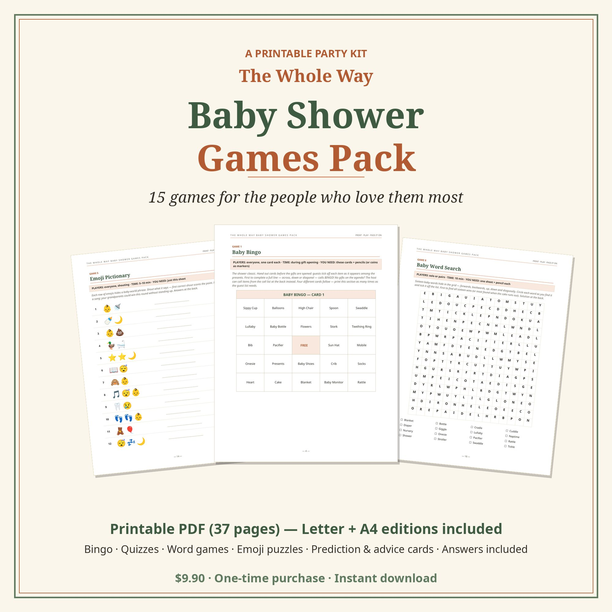
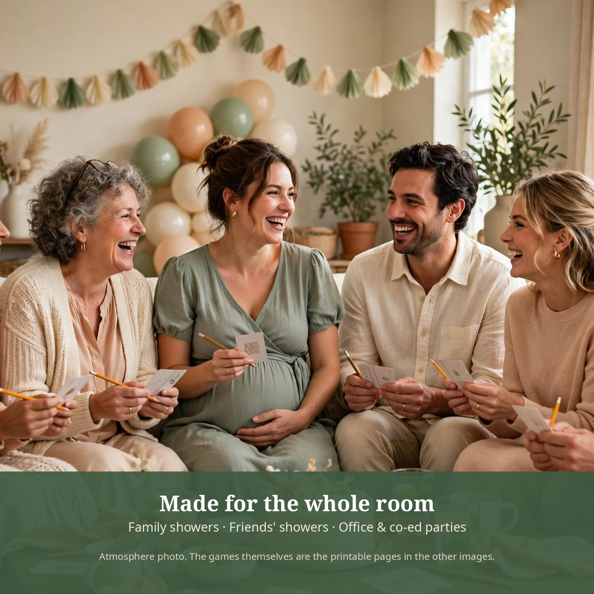
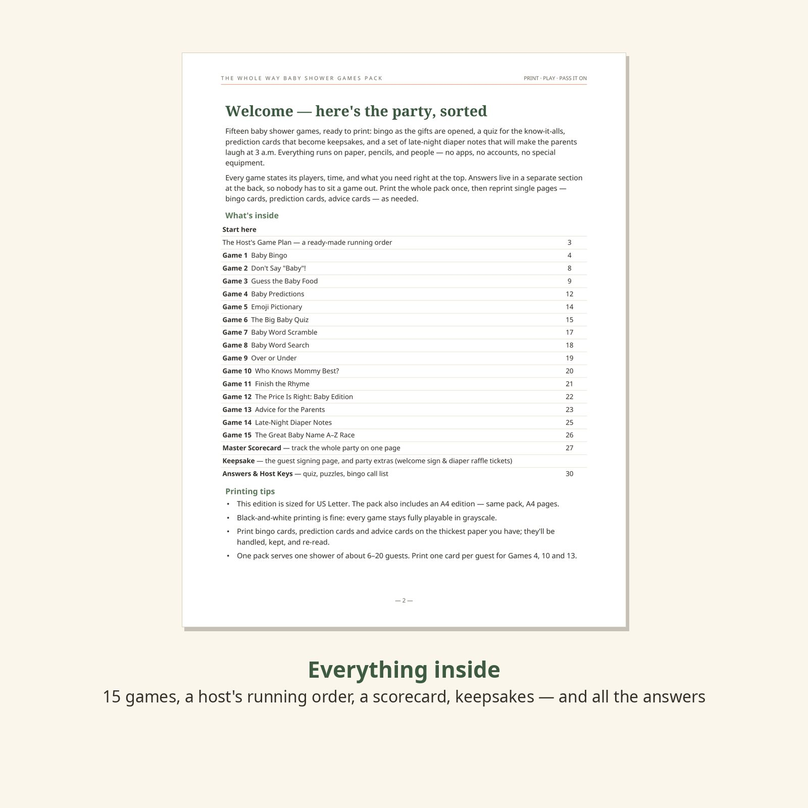
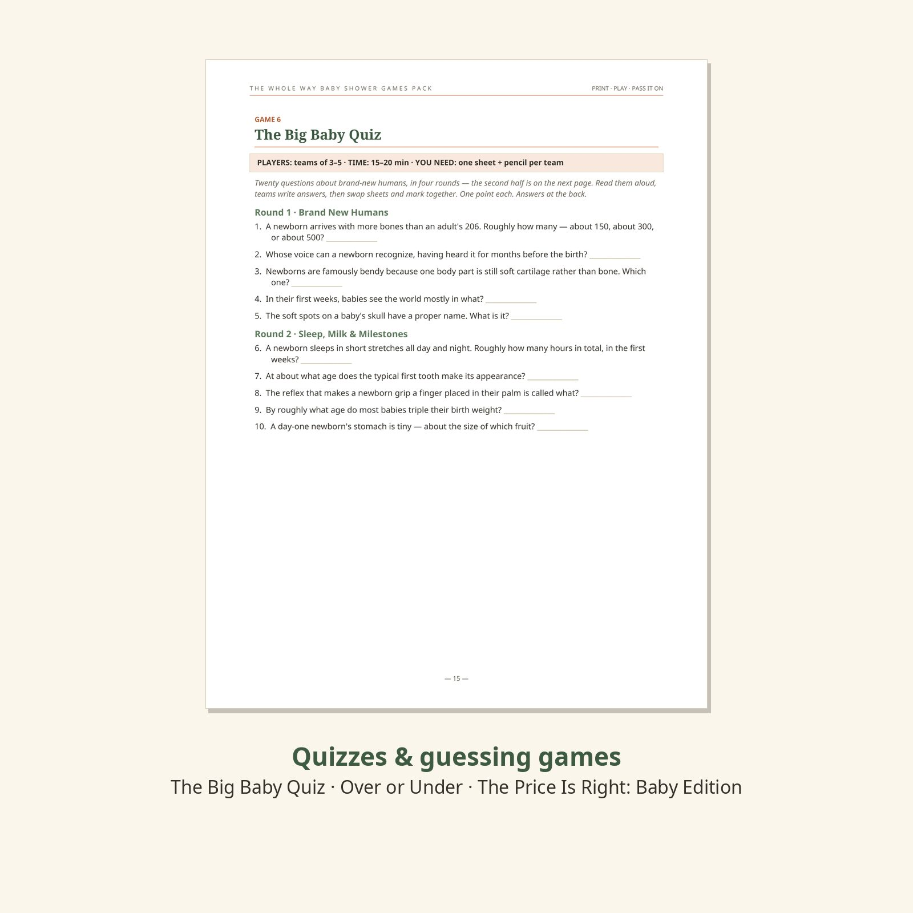
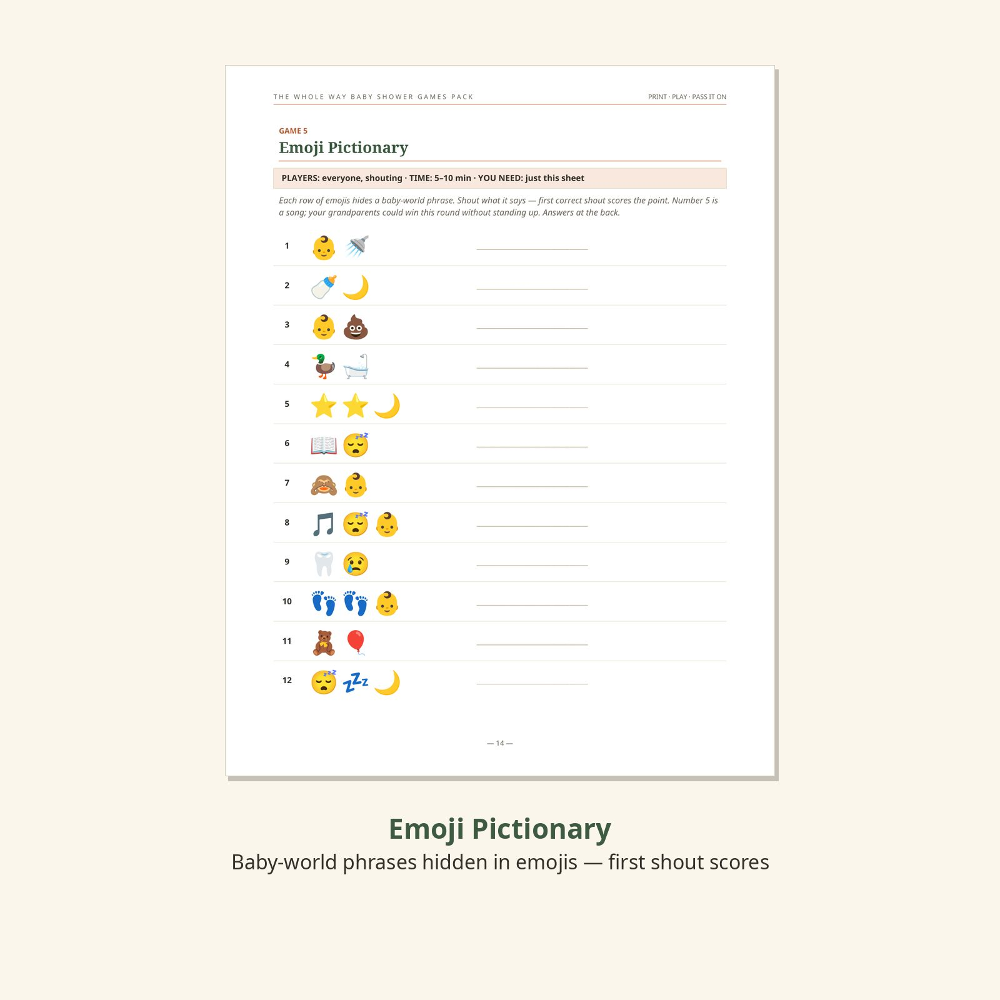
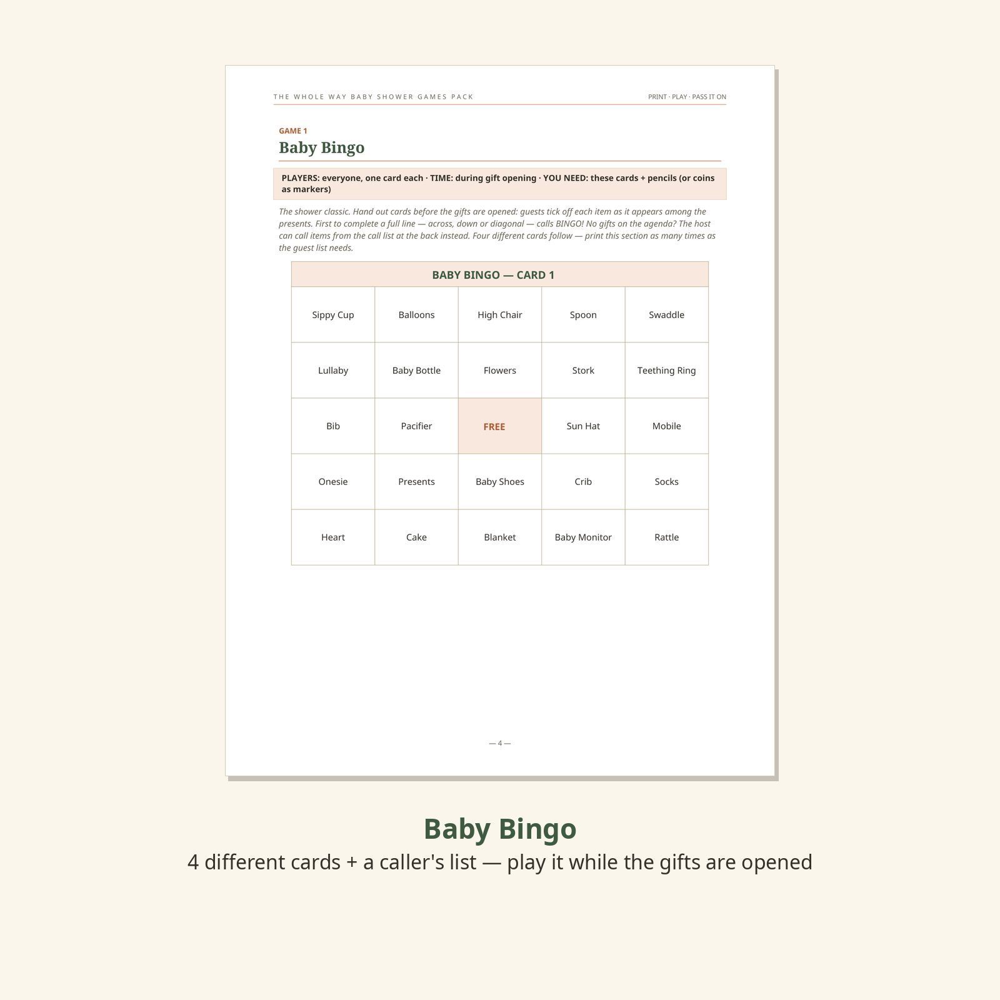
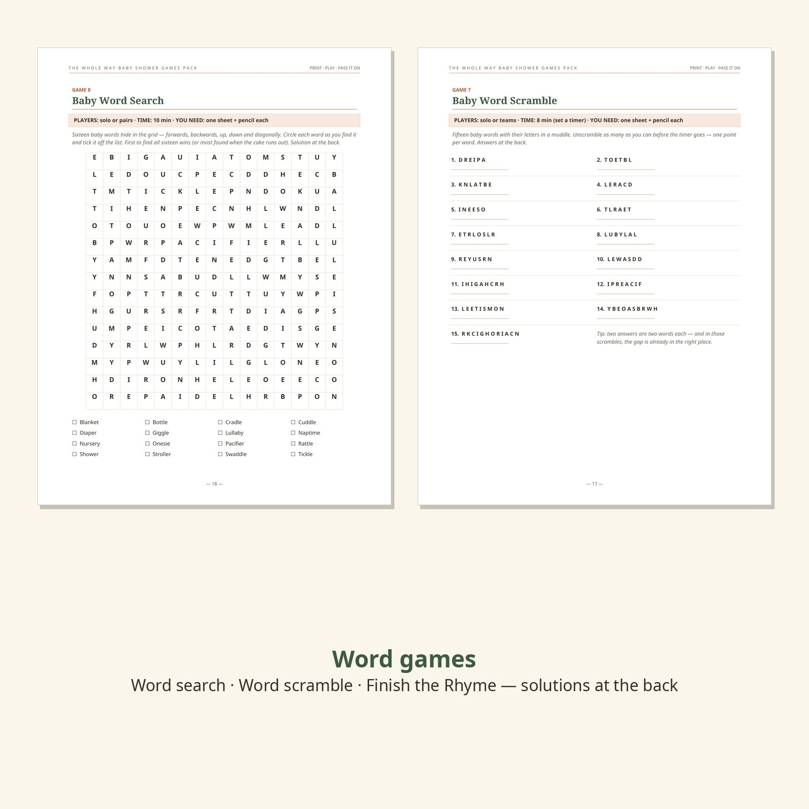

The Whole Way Baby Shower Games Pack
Fifteen games for the people who love them most — bingo as the gifts are opened, a quiz for the know-it-alls, prediction cards that become keepsakes, and one game whose whole job is to make a new parent laugh at 3 a.m.
$9.90 one-time payment
Buy the Baby Shower Games PackSecure checkout by Creem — taxes are handled by Creem at checkout. Instant download after purchase. Prefer the full store listing? View this product on Creem.


The moment this is for
Picture the room an hour from now: the mom-to-be in the good chair, tissue paper everywhere, three conversations running at once — and that warm, slightly chaotic happiness that only happens when everyone in the room already loves someone who hasn't arrived yet.
This pack is built for that room. The games aren't the point, exactly. The predictions your college roommate writes will be read out loud when the baby is eighteen. The advice card from grandma goes in the baby box. And the notes your guests tuck into the clean diapers — the ones that say you are doing brilliantly — will be found at 3 a.m. by a parent who really needed to read them. The games just make sure the room laughs while all that gets written.
What you get
- Two printable PDFs — the complete pack in US Letter (37 pages) and A4 (36 pages). Print the whole pack once, or just the games you're playing tonight, in color or black-and-white.
- Welcome & Contents — what's in the pack and how to run it.
- The Host's Game Plan — a ready-made running order for a two-hour shower, with house rules that prevent arguments.
- 15 complete games — the full list is below; every game states its players, time and what you need at the top of its page.
- Keepsake pages — prediction cards, wishes for the baby, an advice card and a mad-lib letter, plus a guest signing page for everyone who was there.
- Master Scorecard — one page tracks the scored games and names today's champion.
- Answers & Host Keys — every quiz answer with a one-line note, the price key, emoji / scramble / rhyme answers, the word-search solution and the bingo call list, in a separate section at the back so nobody has to sit a game out.
- Gender-neutral by design — sage & peach throughout, no pink-or-blue guessing, and no date printed anywhere: reprint it for the next shower on your calendar.





All 15 games, in the order they appear in the pack
Who this is for
- Anyone hosting a baby shower — family, friends, co-ed, office, or a virtual-shower host mailing printables to guests.
- Hosts who don't know the baby's sex, or don't want a pink-or-blue party: the design is sage & peach throughout.
- Anyone who wants the entertainment handled: running order, scorecard, answers and even the thank-you cards are all in the file.
Who this is not for
- Anyone who wants an app or screen-based games — this is paper, on purpose.
- Anyone who needs games in a language other than English (this edition is English only).
- Anyone who wants an editable / Canva-template pack — this is a finished, print-and-play PDF.
FAQ
What exactly do I receive?
A ZIP containing the complete pack twice — a 37-page US Letter PDF and a 36-page A4 PDF (same games, two page sizes) — plus a short read-me. Nothing is shipped; it's a download, ready right after checkout.
Is everything really printable at home?
Yes. Pages are designed with real margins and black-and-white printing stays fully playable — no game hides essential information in color. The emoji game is the only color page, and it also works read off a phone screen passed around the room.
Is it really gender-neutral?
Yes — sage green and peach, no pink-or-blue anywhere, and no game assumes anything about the baby. It works for surprise babies, twins' showers, second babies, and adoption showers with small wording changes by the host.
Can I reuse it for another shower?
Please do. There's no date printed anywhere in the pack and babies arrive in every season — print a fresh set for the next shower on your calendar.
How many people can play?
Most games work from 6 guests up; the shouting games (Emoji Pictionary, Over or Under) scale to a whole room. One pack serves a shower of about 6–20 guests — print one card per guest for Predictions, Who Knows Mommy Best and Advice. Guess the Baby Food needs 8–12 small jars of baby food, bought by the host.
What's your refund policy?
Refunds follow the policy shown at checkout. If the file is faulty or won't open, email us and we'll fix it or refund you — and if you find a typo or can prove a baby fact wrong, tell us: corrections go into the next edition, and updates to this edition are free for buyers.
Was AI used to make this?
Yes — openly. The games were produced with AI assistance and human editorial review, and the party photograph on this page is AI-generated atmosphere imagery (it's labelled as such). Every preview of the games themselves is a real page from the actual PDF. Every question, puzzle and card was written for this pack; the rhymes are traditional, public-domain nursery rhymes, and the baby facts carry their real ranges rather than fake precision.